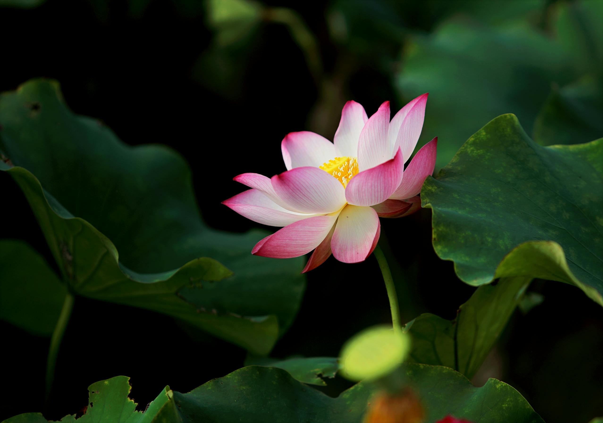

-

Flowers
Amaryllis
The Amaryllis flower has beautiful red accents along the edge of the flower which catches the eye.
-

Flowers
Garden Rose
The Garden Rose is so elagent and peachy, gives a feel of softness.
-

Flowers
Orange Rose
The Orange Rose isn't quite orange but has some orange along the edges. It reminds me of a creamsicle.
-

Flowers
Pink Rose
The Pink Rose is similiar to the Orange Rose but has much more colour to it, Very beautiful.
-

Flowers
Nelumbo
The Nelumbo has a very subtle pink and yellow which is super simple but just as pretty.
-

Flowers
Lotus Flower
The Lotus Flower is super vibrant and kind of a yellowy orange but reminds me of summer, which makes me happy.
-

Flowers
Purple Cranesbill
Love the colour of the Purple Cranesbill, super vibrant and really draws the eye in.
-

Flowers
Adenium Obesum
The Adenium Obesum kind of reminds me of a spider I don't know why but it gives off creepy vibes. Still a very beautiful flower though.
-

Flowers
Sunflower
Now for the Sunflower, this flower represents summer for me just because how bright the yellow is.